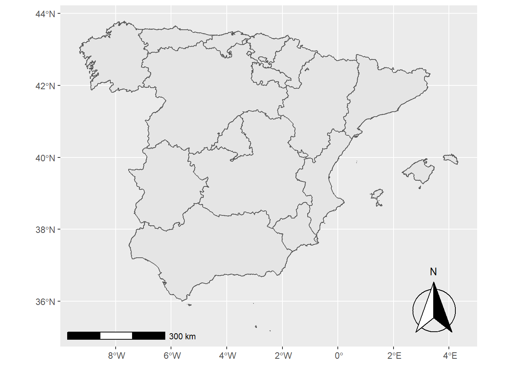
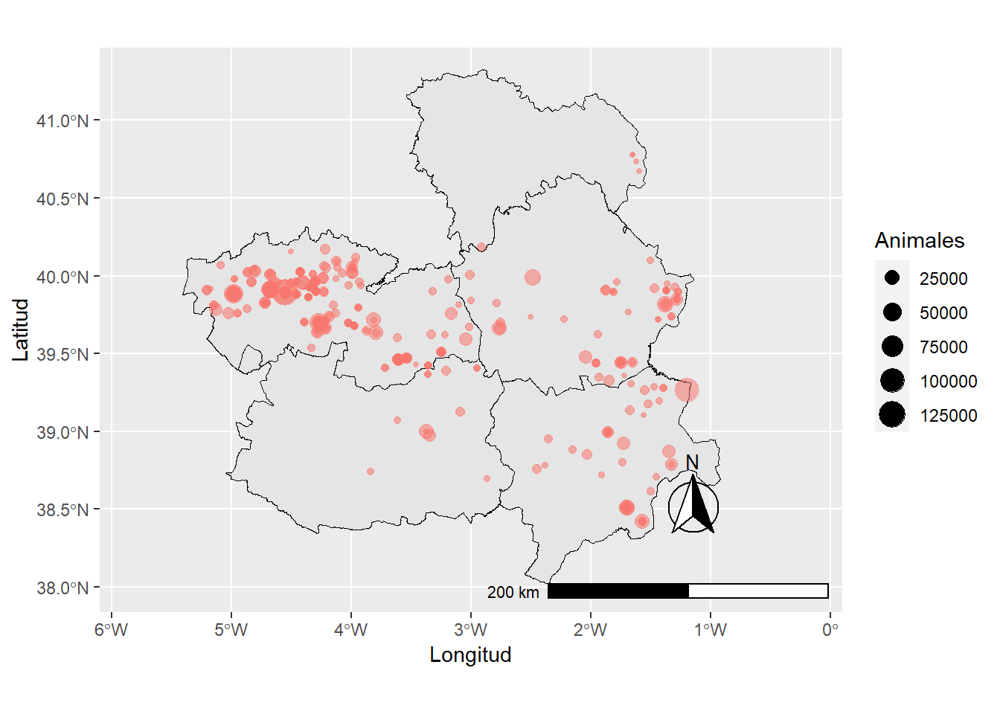
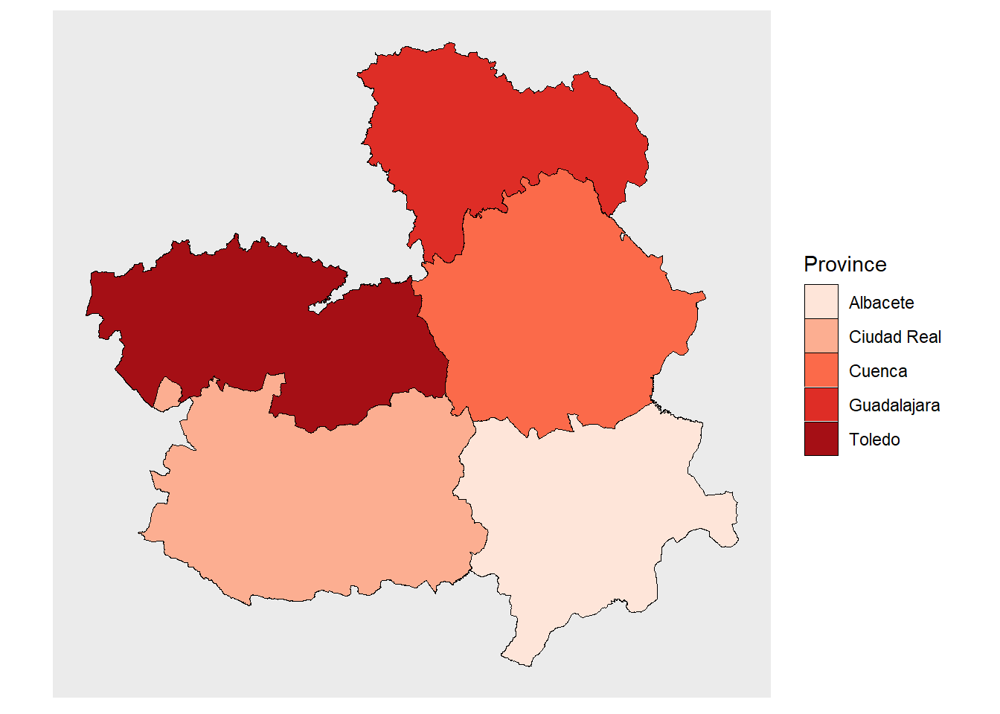

Creating basic cartographies
We start by loading libraries
library(tidyverse)
library(sf)
library(ggspatial)
library(readxl)
library(writexl)
library(sf)
library(tidygeocoder)1 Creating maps with already existing geospatial information.
The first data sets we will load are shapefiles. Shapefiles are geospatial datasets that contains the necessary information to produce maps.
The first dataset we will load is from the Spanish Institue of Geography. It contains data on the legal limits of Spain’s autonomous communities.I obtained this data set form the open data repository of CLM’s government. We will load it and use it as our basic cartography of CLM’s provinces.
#Data for the autonomous communities.
We start by reading the shapefile.
CCAA <- st_read("data/recintos_autonomicas_inspire_peninbal_etrs89.shp")## Reading layer `recintos_autonomicas_inspire_peninbal_etrs89' from data source
## `C:\Victor\KCL\Thesis\R\Website\Fighting_for_our_lives_MA_Thesis\data\recintos_autonomicas_inspire_peninbal_etrs89.shp'
## using driver `ESRI Shapefile'
## Simple feature collection with 20 features and 9 fields
## Geometry type: MULTIPOLYGON
## Dimension: XY
## Bounding box: xmin: -9.301516 ymin: 35.17045 xmax: 4.327785 ymax: 43.79238
## Geodetic CRS: ETRS89Just to check that our data set is properly loaded, let’s make our first map!
ggplot()+# We are asking R to use the ggplot tools to produce a visualization
geom_sf(data = CCAA, aes(fill=))+# We are asking R to
annotation_north_arrow(location="br", which_nort=TRUE,# Here we are adding
#a north facing arrow to make the map more
#readable. We are telling r to place it in the
#bottom right hand side ("br") and use the real
#north as a point of reference.
style = north_arrow_fancy_orienteering(),
#this is a mere stylistic decision. I am asking R to
#use the style north_arrow_fancy_orienteering
#because I like how it looks.
height = unit(2.5, "cm"),# We specify the arrow's
#height to 2.5cm.
width = unit(2.5, "cm"))+# We specify the arrow's
#width to 2.5cm.
annotation_scale()# Lastly, this piece of automatically calculates
#our map's scale.It works! We have a map. Now we have to make the dataset more operable. Remember that our goal is to create a map that situates CLM within Spain. Thus, we will look at the column NATCODE. The NATCODE is a string of numbers containing information about several geographic features. For instance, the first two characters of a NATCODE tell us which country a given feature belongs to, whereas the third and fourth characters tell us which autonomous community is a given place part of. Using this information, I will break down the column NATCODE and create new columns identifying the country, autonomous community, province and municipilaty of our data. I promise this is the hardest bit we will do in this website!
CCAA_2<- CCAA%>%
mutate(
c_country = str_sub(string = NATCODE, start = 1, end = 2),
c_CCAA = str_sub(string = NATCODE, start = 3, end = 4),
c_province = str_sub(string = NATCODE, start = 5, end = 6),
cod_ine_municipality = str_sub(string = NATCODE, start = 7, end = -1))
names(CCAA_2)## [1] "INSPIREID" "COUNTRY" "NATLEV"
## [4] "NATLEVNAME" "NATCODE" "NAMEUNIT"
## [7] "CODNUT1" "CODNUT2" "CODNUT3"
## [10] "geometry" "c_country" "c_CCAA"
## [13] "c_province" "cod_ine_municipality"Now that we have split the NATCODE and created a new column where each Autonomous Community has its own code, we can situate CLM within Spain.
Firstly, we will create a very simple object containing only the data for CLM. It will be called “castilla_la_mancha”
castilla_la_mancha <- CCAA_2%>% #Here we are asking R to create a new object by looking at
#the data frame "CCAA_2".
filter(c_CCAA == "08") # And this code could be read by a human as: "Out of the data frame
# CCAA_2, look for every instance where 08 (CLM's code) appeared in the c_CCAA column". After creating an object containing the data frame for CLM, we can plot it on top of our previous map!
ggplot()+
geom_sf (data = CCAA_2, aes(fill=NULL))+ #Use the data frame CCAA_2 to build our basic map
geom_sf (data = castilla_la_mancha , aes(fill="red"))+ #paint the object
#contained in castilla_la_mancha (CLM's space) in red
annotation_north_arrow(location="tr", which_north=TRUE,#
style = north_arrow_fancy_orienteering(),
height = unit(2, "cm"),
width = unit(2, "cm"))+
annotation_scale() +
guides(fill = FALSE)+ #Here I am asking R not to show a label specifying the color
theme(axis.text = element_blank(), #This part gets rid of the coordinates to make a clearer map,
#I decided to do so in this map because providing precise geospatial information is not
#as important in the maps plotting macrogranjas
axis.line = element_blank(),
axis.ticks = element_blank(),
panel.border = element_blank(),
panel.grid = element_blank(),
axis.title = element_blank())
We are done with out first map! Now, let’s figure out where are CLM’s provinces ;)
#Data for the provinces within Spain.
Once again, the first step is to load the corresponding shapefile.
CLM_provinces <- st_read("data/Provincias.shp") ## Reading layer `Provincias' from data source
## `C:\Victor\KCL\Thesis\R\Website\Fighting_for_our_lives_MA_Thesis\data\Provincias.shp'
## using driver `ESRI Shapefile'
## Simple feature collection with 5 features and 7 fields
## Geometry type: MULTIPOLYGON
## Dimension: XY
## Bounding box: xmin: -5.405995 ymin: 38.02244 xmax: -0.9159556 ymax: 41.32763
## Geodetic CRS: WGS 84Great! We have loaded our spatial data set. Please note that the data set is in Spanish, we will fix that in two steps.
The first step is optional, we are converting our geospatial data into a data frame.
CLM_provinces_df <- fortify(CLM_provinces) #This piece of code turns our spatial data set into
# a data frame. A light kind of dataset that R works very well with. You can ommit this step
# if you want to. I did this because my laptop's computing power is not the greastest one ever.Now, comes the most interesting part. We are changing the name of one of the columns that we need to use later on.
CLM_provinces_df <- rename(CLM_provinces_df,
Province = NOMBRE) #We are asking R to rename the column "NOMBRE" (name is Spanish) as
# "Province", this will come in handy for our next map.Lastly, we just have to make a map of CLM’s provinces
CLM_provinces_df %>%
ggplot(aes(fill=Province, ))+
scale_fill_brewer(palette = "Reds") +
geom_sf(color = "black", size = 0.1)+
theme(axis.text = element_blank(),
axis.line = element_blank(),
axis.ticks = element_blank(),
panel.border = element_blank(),
panel.grid = element_blank(),
axis.title = element_blank())
2 Creating maps with new geospatial information.
So far we have produced maps with existing information. Now let’s produce map to locate the existing macrogranjas in CLM and the projected ones.
#Map of the existing macrogranjas.
First of all, we will load an excel file containing the farms that in 2019 had at least 2000 pigs.
villages_macrogranjas <- read_excel("data/porcino +2000.xlsx")Now, we will clean our data set. Since some of the municipalities’ name include articles, we will get rid of them with the following line of code
villages_macrogranjas_municipality_split <- villages_macrogranjas %>%
separate(Municipality,c("MUNICIPIO","ARTICLE"),sep=",")Note that the excel we are working with does not have coordinates, just the name of villages. We will use the package tidygeocoder to use data from OpenStreetMaps as to geocode our data automatically. There are other options to geocode municipalities automatically, GoogleMaps being one of them. However, since 2018 Google changed their terms of service and prevents users to connect to their API to produce and publish geospatial information. Hence, we are using OpenStreetMaps, an open-source project. Out of respect to the people at OpenStreetMaps we are setting a minimum time of 2 seconds between each request (each search of each municipality) to prevent overloading their service. It will take a while, so feel free to grab a cup of tea on the meantime.
villages_geocoded <- villages_macrogranjas_municipality_split %>%
geocode("MUNICIPIO", method = 'osm', lat = latitude , long = longitude, min_time=2)Now we just have to plot our data in a new map!
CLM_provinces %>%
ggplot(aes("gray33"))+
geom_sf(color = "black", size = 0.1) +
geom_point(data=villages_geocoded, aes(x=longitude, y=latitude, size=Animals, colour="pink", alpha=0.01)) +
annotation_scale(location = "br", width_hint = 0.5) +
annotation_north_arrow(location = "br", which_north = "true",
pad_x = unit(0.75, "in"), pad_y = unit(0.5, "in"),
style = north_arrow_fancy_orienteering) +
coord_sf(xlim = c(-5.5, -0.5), ylim = c(38, 41.30)) +
guides(colour = FALSE, alpha = FALSE)+
xlab("Longitude")+
ylab("Latitude")Here is our map!
#Map of projected macrogranjas.
Now, let’s create our last map. We will follow the same steps that we did above. I obtained the information from NEVIA in early August 2021. By the time you are reading this, there is a good chance the data is outdated.
projected_macrogranjas <- read_excel("data/projected_macrogranjas_clean.xlsx")Just as before, our dataset lacks geospatial coordinates. Fear not, OpenStreetMaps will rescue us once again.
projected_macrogranjas_geocoded <- projected_macrogranjas %>%
geocode("Municipality", method = 'osm', lat = latitude , long = longitude, min_time=2)The last step left to do is to plot our information into a 4th map.
CLM_provinces %>%
ggplot(aes("gray33"))+
geom_sf(color = "black", size = 0.1) +
geom_point(data=projected_macrogranjas_geocoded, colour="purple3", aes(x=longitude, y=latitude, alpha=0.01)) +
annotation_scale(location = "br", width_hint = 0.5) +
annotation_north_arrow(location = "br", which_north = "true",
pad_x = unit(0.75, "in"), pad_y = unit(0.5, "in"),
style = north_arrow_fancy_orienteering) +
coord_sf(xlim = c(-5.5, -0.5), ylim = c(38, 41.30)) +
guides(colour = FALSE, alpha = FALSE)+
xlab("Longitude")+
ylab("Latitude")
And here it is! We are done with our cartographic production!